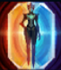
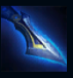
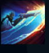
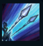
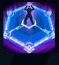

Camille
| Camille The Steel Shadow | |
|---|---|
| Release date | 07.12.2016 |
| Class | Diver |
| Positions | Top, Middle |
| Resource | Mana |
| Range type | Melee |
| Adaptive type | Physical |
| Base statistics | |||
| Health | 576 – 2021 | Mana | 338.8 – 1222.8 |
| Health regen. | 8.5 – 22.1 |
Mana regen. | 8.15 – 20.9 |
| Armor | 35 – 99.6 | Attack damage | 68 – 127.5 |
| Magic resist. | 32 – 53.25 | Crit. damage | 175% |
| Move. speed | 340 | Attack range | 125 |
Camille este Inteligențiarul Principal al Casei Ferros – o agentă elegantă de elită, echipată cu toate armele și augmentările de care are nevoie ca să opereze în afara legii, asigurând buna funcționare a ''mașinăriei'' din Piltover și a societății zauniene. Este adaptabilă, atentă la detalii și consideră că tehnicile neglijente sunt cel mai jenant lucru din lume. Cu o minte la fel de ascuțită ca tăișurile armelor sale și cu augmentări hextech menite să-i crească mereu eficiența, Camille îi face pe mulți să se întrebe dacă n-a devenit mai mult mașinărie decât femeie. |  |
DEFENSIVĂ STRATEGICĂ Atacurile de bază împotriva campionilor îi oferă lui Camille un scut egal cu un procent din viața ei maximă, care o protejează pentru scurt timp de tipul principal de daune al acestora (fizice sau magice).. |
||
|---|---|---|---|---|
 |
PRECIZIE LETALĂ Următorul atac al lui Camille provoacă daune bonus și îi oferă un bonus la viteza de mișcare. Pentru scurt timp după folosire, vraja poate fi reactivată și provoacă daune bonus semnificativ mai mari dacă Camille așteaptă puțin înainte de a lansa cel de-al doilea atac. |
|||
 |
PRESIUNE TACTICĂ După o perioadă de pregătire, Camille atacă într-o zonă în formă de con, provocând daune. Inamicii prinși în jumătatea exterioară a conului sunt încetiniți și suferă daune suplimentare, vindecând-o pe Camille. |
|||
|  |
ARUNCAREA CÂRLIGULUI Camille se năpustește către un zid, apoi sare de pe el asupra campionilor inamici și îi aruncă în sus când aterizează. |
|||
 |
ULTIMATUM HEXTECH Camille se năpustește către un campion-țintă și îl blochează într-o zonă. În plus, atacurile ei de bază îi provoacă daune magice bonus țintei. |